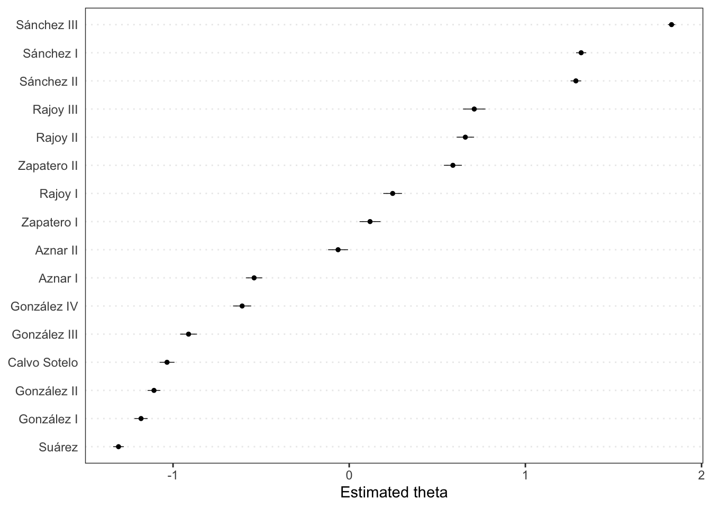
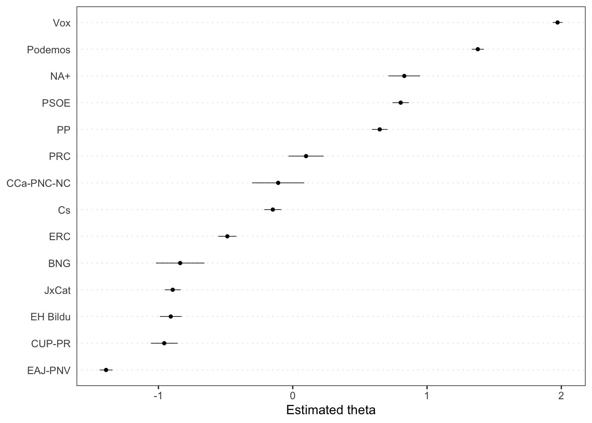
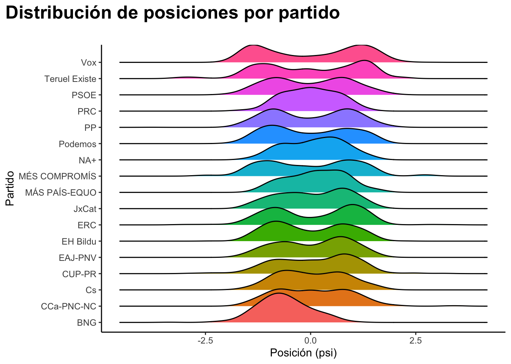
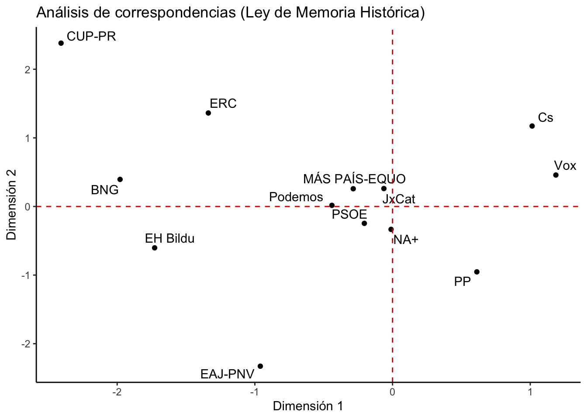
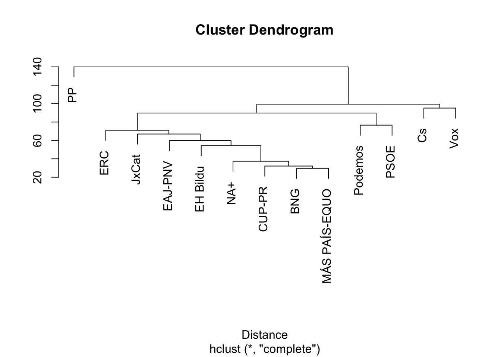

Escalonado
de textos
Comparando textos a partir de algoritmos
Introducción
En esta sesión vamos a explorar distintas técnicas de comparación y escalonado de textos. Tales herramientas permiten establecer qué textos se acercan entre sí y medir las distancias entre ellos, algo que resulta especialmente útil cuando deseamos identificar patrones o desarrollar tipologías.
Wordscores
El método de Wordscores (Laver, Benoit, and Garry 2003) es una técnica supervisada de escalonado de textos que asigna puntuaciones a documentos basándose en un conjunto de textos de referencia previamente clasificados. Utiliza la frecuencia de las palabras para calcular la proximidad de cada documento a los textos de referencia o anclas que definen las posiciones en una escala. Por ejemplo, si tenemos discursos políticos clasificados como “izquierda”, “centro” y “derecha”, podemos usar Wordscores para evaluar nuevos discursos y determinar su posición en el espectro político basándonos en su similitud con los textos de referencia. Sin embargo, contiene una serie de limitaciones de carácter estadístico que dificultan la comparación de textos distintos y problemas de compatibilidad entre escalas, extensamente discutido por Lowe (2008).
Se trata de un método “cuqui”, “sencillito”, muy novedoso y hermoso por su simplicidad. Para 2003, cuando no existía prácticamente nada, representaba una innovación importante en lo que se podía hacer con textos. No obstante, hoy no es más que un trofeo a la obsolescencia científica en la era de la IA. Por eso, rendimos homenaje a la técnica y no perderemos el tiempo ni siquiera en intentar implementarla.
Wordfish
Preparaos, que ahora empezamos la sección de métodos relacionados con peces. Wordfish es una técnica bastante buena que emplea estadística bayesiana para determinar la posición de textos en una escala unidimensional (Slapin and Proksch 2008; Proksch and Slapin 2010). A partir de la distribución de las palabras, determina la proximidad entre múltiples textos y los ubica en una escala común.
A diferencia de Wordscores, Wordfish no requiere textos de referencia preclasificados, lo que lo hace más flexible para analizar conjuntos de textos diversos. Además, se basa en un modelo estadístico de distribución (poisson), algo que faltaba a la técnica anterior. El gran talón de Aquiles de la herramienta viene de su propia fortaleza: la suposición de que los textos pueden ser representados adecuadamente en una sola dimensión (Slapin and Proksch 2008).
Como veremos, el tema de la dimensionalidad es crucial para el escalonado de textos. Las técnicas que consideramos aquí comprimen la variedad y riqueza de los textos a una escala unidimensional. Cuando trabajamos con textos extensos y que contienen más de un tema o dimensión sustantiva eso puede resultar en la dificultad de identificar a qué exactamente se refiere la escala producida por el análisis. A veces tenemos una escala ideológica clara, pero en muchas otras la interpretación no resulta tan sencilla.
Aquí, la selección de los textos para el análisis resulta fundamental. Si empleamos debates o textos que se centran en un tema o que claramente permiten el mapeo de posiciones en una escala ideológica, los resultados son más potentes. Por esa razón, y en mi experiencia aplicando el método, el wordfish resulta particularmente interesante para ubicar actores o entidades en un espacio temático concreto.
Code
# carga los paquetes
require(quanteda)
require(quanteda.textmodels)
require(quanteda.textplots)
# crea el corpus y los tokens
cp <- corpus(spa.inaugural)
tk <- tokens(cp,
remove_punct = TRUE)
tk <- tokens_remove(tk,
pattern = stopwords("es"))
# Crea la matriz de frecuencias
df <- dfm(tk)
wf <- textmodel_wordfish(df)
# Muestra los resultados
textplot_scale1d(wf)
En el ejemplo anterior hemos utilizado los discursos de investidura de los presidentes del gobierno español. El resultado es una escala que ubica a los presidentes en función de las palabras que emplean en sus discursos. En ese caso, todo el corpus ha sido empleado para ubicar a los textos.
No obstante, podemos sacar más provecho de la técnica al aplicarla a temas o debates concretos. El código abajo aplica el algoritmo al debate sobre el proyecto de Ley Orgánica del Sistema Universitario (LOSU). He listado también los números de expediente de otros proyectos de ley para que podamos ver cómo los distintos partidos se posicionan frente a diferentes propuestas legislativas:
Code
# Expedientes de temas concretos
# Libertad sexual: 121/000062
# Memoria democrática: 121/000064
# Creacion de empresas: 121/000075
# Transformación energetica: 121/000019
# Deporte: 121/000082
# Derecho a la vivienda: 121/000089
# LOSU: 121/000111
# Crea una base de datos con las sesiones
sp <- spa.sessions
# Selecciona el debate deseado
library(stringi)
sx <- sp[which(stri_detect_fixed(sp$issue.details,"121/000111")==TRUE),]
sx <- sx[sx$rep.condition!="Miembro de la mesa",]
# Agrega los textos por partido
ag <- aggregate(
list(text=sx$speech.text),
by=list(party=sx$rep.party),
FUN=paste,
collapse="\n")
# Crea el corpus
cp <- corpus(ag,
docid_field = "party")
# Crea los tokens y los limpia
tk <- tokens(cp,
remove_punct = TRUE)
tk <- tokens_remove(tk,
pattern = stopwords("es"))
# Crea la matriz de frecuencias
df <- dfm(tk)
# Ejecuta el wordfish
wf <- textmodel_wordfish(df)
# Muestra los resultados
textplot_scale1d(wf)
Wordshoal
Wordshoal es una técnica de escalonado de textos que permite medir las variaciones en la posición de los actores en diferentes debates o subconjuntos de texto (Lauderdale and Herzog 2016). Se trata de la herramienta idea para identificar polarización en discursos políticos. Típico chiste friki de usuarios de R (rvest, para harvest, dplyr, por deeply R, o muchos otros paquetes similares en R), el nombre mismo hace referencia a la técnica anterior: mientras que el wordfish miraba los peces de palabras (word - fish), el wordshoal mira los cardúmenes o bancos de palabras (word - shoal).
A diferencia de Wordfish, que generaba una estadística única para cada unidad de texto, esta técnica permite medir la variación en el posicionamiento de partidos o diputados en distintos debates. Eso permite no solo identificar aquellos actores más coherentes en todo el corpus, sino también identificar los debates más polarizados. Trabaja en dos pasos. Primero, calcula el wordfish para cada debate por separado. Luego, lleva a cabo un análisis factorial bayesiano para integrar todos los debates.
Algunos de los parámetros estimados:
- theta - posición estimada de cada documento (en nuestro caso, la posición estimada de cada partido en los debates como un todo)
- psi - posiciones estimadas a nivel de debate (en nuestro caso, la posición de cada partido en cada debate)
- beta - Efectos marginales del debate
- alpha - Efectos fijos del debate
Code
# Carga los datos de las sesiones
sp <- spa.sessions
# Crea un identificador único para cada debate
sp$debate_id <- paste0(sp$session.number,"_",sp$issue.details)
# Elimina las intervenciones de los
# miembros de la mesa
sp <- sp[sp$rep.condition!="Miembro de la mesa",]
# Selecciona solo aquellos textos con más
# de 15 palabras
library(stringi)
sp$nwords <- stri_count_words(sp$speech.text)
sp <- sp[sp$nwords>15,]
# Selecciona solo aquellos debates con más
# de 4 intervinientes distintos
ag <- aggregate(sp$rep.name,
by=list(debate_id=sp$debate_id),
FUN=function(x) length(unique(x)))
ag <- ag[ag$x>4,]
sp <- sp[sp$debate_id%in%ag$debate_id,]
# Prepara los datos para el análisis
library(quanteda)
library(wordshoal)
# Agrega los textos por debate y partido
ag <- aggregate(
list(text=sp$speech.text),
by=list(debate_id=sp$debate_id,
partido=sp$rep.party),
FUN=paste,
collapse="\n")
# Crea el corpus
cp <- corpus(ag,
text_field = "text")
# Crea los tokens
df <- dfm(tokens(cp, remove_punct=T))
# Corre el wordshoal
ws <- textmodel_wordshoal(df,
groups=docvars(cp,"debate_id"),
authors=docvars(cp, "partido"))
Scaling 785 document groups...................20 ...................40 ...................60 ...................80 ...................100 ...................120 ...................140 ...................160 ...................180 ...................200 ...................220 ...................240 ...................260 ...................280 ...................300 ...................320 ...................340 ...................360 ...................380 ...................400 ...................420 ...................440 ...................460 ...................480 ...................500 ...................520 ...................540 ...................560 ...................580 ...................600 ...................620 ...................640 ...................660 ...................680 ...................700 ...................720 ...................740 ...................760 ...................780 .....
Factor Analysis on Debate-Level Scales.................................
Elapsed time: 157.554 seconds.Code
# Extrae las posiciones por debate y partido
dd <- data.frame(debate=ws$groups,
partido=ws$authors,
psi=round(ws$psi,2))
# Muestra los resultados
library(reactable)
reactable(dd,
columns = list(
debate = colDef(name = "Debate"),
partido = colDef(name = "Partido"),
psi = colDef(name = "Posición")
),
searchable = TRUE,
resizable = T,
filterable = TRUE,
defaultPageSize = 10,
highlight = TRUE
)Podemos ver la distribución de posiciones por partido en los debates mediante un gráfico de densidad:
Code
library(dplyr)
library(ggplot2)
library(ggridges)
ggplot(dd, aes(x=psi, y=partido, fill=partido))+
geom_density_ridges()+
theme_classic()+
theme(legend.position = "none",
plot.title.position = "plot",
plot.title=ggtext::element_markdown(size=18))+
labs(title = "**Distribución de posiciones por partido<br>**",
x = "Posición (psi)",
y = "Partido")
Ahora, identificamos los debates más polarizados, es decir, aquellos en los que la diferencia entre la posición máxima y mínima de los partidos es mayor:
Code
# Agrega las posiciones por debate
ag <- aggregate(list(range=dd$psi),
by=list(debate=dd$debate),
FUN=range)
# Calcula el rango de posiciones
ag$min <- round(ag$range[,1],2)
ag$max <- round(ag$range[,2],2)
ag$dif <- round(ag$range[,2] - ag$range[,1],2)
ag$range <- NULL
# Ordena los debates por polarización
ag <- ag[order(ag$dif, decreasing=TRUE),]
# Muestra los resultados
library(reactable)
reactable(ag,
columns = list(
debate = colDef(name = "Debate"),
min = colDef(name = "Mínimo"),
max = colDef(name = "Máximo"),
dif = colDef(name = "Diferencia")
),
searchable = TRUE,
resizable = T,
filterable = TRUE,
defaultPageSize = 10,
highlight = TRUE
)Análisis de correspondencias
El análisis de correspondencias es una técnica estadística que permite representar datos categóricos en un espacio multidimensional. En el contexto del análisis de textos, se utiliza para identificar relaciones entre palabras y documentos, facilitando la visualización de similitudes y diferencias entre ellos. A través de esta técnica, es posible mapear textos en un espacio donde la proximidad entre ellos refleja su similitud temática o lingüística (Greenacre 2017). También podemos ver cómo los componentes son capaces de resumir o sintetizar la varianza entre las posiciones políticas.
Code
# Carga los paquetes
library(quanteda.textmodels)
library(ggplot2)
library(ggrepel)
# Selecciona el debate deseado
# En nuestro caso será el de
# la memooria democrática: 121/000064
sp <- spa.sessions
sx <- sp[which(stri_detect_fixed(sp$issue.details,"121/000064")==TRUE),]
sx <- sx[sx$rep.condition!="Miembro de la mesa",]
# Agrega los textos por partido
ag <- aggregate(
list(text=sx$speech.text),
by=list(party=sx$rep.party),
FUN=paste,
collapse="\n")
# Crea el corpus
cp <- corpus(ag,
docid_field = "party")
# Crea los tokens y los limpia
tk <- tokens(cp,
remove_punct = TRUE)
tk <- tokens_remove(tk,
pattern = stopwords("es"))
# Crea la matriz de frecuencias
df <- dfm(tk)
# Ejecuta el análisis de correspondencias
cca <- textmodel_ca(df)
# Extrae las coordenadas de los capítulos
dd <- data.frame(cca$rowcoord)
dd$name <- as.character(rownames(dd))
dd <- dd[, c("name", "Dim1", "Dim2")]
# crea un gráfico de dispersión
# para examinar los resultados
ggplot(dd, aes(x = Dim1, y = Dim2)) +
geom_point() +
geom_text_repel(aes(label = name)) +
theme_classic() +
theme(legend.position = "none")+
geom_hline(yintercept = 0,
color = "red3",
linetype = "dashed") +
geom_vline(xintercept = 0,
color = "red3",
linetype = "dashed")+
xlab("Dimensión 1") +
ylab("Dimensión 2") +
labs(title = "Análisis de correspondencias (Ley de Memoria Histórica)")
Además, podemos emplear componentes con menos peso (componente 3, 4, 5) para entender, por ejemplo, subtemas o matices en las posiciones de los partidos que no se captan por medio de un análisis unidimensional. Podemos también aplicar otras técnicas de escalonado multidimensonal, como PCA o MDS.
Análisis de cluster
El análisis de conglomerados o clustering es una técnica estadística que agrupa objetos similares en conjuntos o “clusters” basándose en sus características compartidas. En el contexto del análisis de textos, se utiliza para identificar grupos de documentos que comparten temas, estilos o vocabularios similares. Al aplicar esta técnica, podemos descubrir patrones ocultos en grandes conjuntos de textos, facilitando la comprensión de su estructura y contenido. No es nada de otro mundo. Lo que hacemos es solamente aplicar la técnica ya conocida a una matriz de frecuencia de palabras.
Utilicemos el debate sobre la Ley de Memoria Democrática para ilustrar cómo funciona el análisis de conglomerados en textos:
Code
# Crea los tokens
tk <- tokens(cp,
remove_punct = T,
remove_numbers = T,
remove_separators = T,
remove_symbols = T)
# Remueve las palabras vacías
tk <- tokens_remove(tk,
pattern=stopwords("es"))
# Crea la matriz de frecuencias
dtm <- dfm(tk)
# Carga el paquete necesario
library(quanteda.textstats)
# Calcula la distancia entre
# los capítulos y los agrupa en
# conglomerados
tstat_dist <- as.dist(textstat_dist(dtm))
clust <- hclust(tstat_dist)
# Muestra los resultados
plot(clust, xlab = "Distance", ylab = NULL)
IA Embedding de textos
Aunque el curso inicialmente no tuviera la intención de cubrir técnicas de inteligencia artificial, creo que sería interesante presentar algunas herramientas más novedosas y potentes que existen hoy para el análisis de textos. Entre ellas, los embeddings de texto son representaciones vectoriales de palabras o documentos que capturan su significado semántico en un espacio multidimensional. Estas representaciones permiten comparar textos de manera más efectiva, facilitando tareas como la clasificación, la agrupación y la búsqueda de similitudes.
Para ello, emplearé el paquete rollama que permite acceder a modelos de lenguaje avanzados desarrollados por Google. En este caso, utilizaremos el modelo “snowflake-arctic-embed2” para generar embeddings de los textos del debate sobre la Ley de Memoria Democrática y luego compararlos con un texto específico. Se puede también emplear modelos online, por medio de APIs, como el modelo “embedding-001” de Google, o similares de OpenAI, Claude, etc.
La ventaja del empleo de modelos locales es que son gratuitos y no requieren de claves de API. Podemos procesar una cantidad enorme de textos sin pagar más que la energía. Desde y siempre, claro, que nuestro ordenador lo permita. No obstante, la mayoría de dichos modelos pueden rodar en un Windows con 16GB de memoria o un Mac con chip M2/M3/M4 estándar. Yo usaré el proveedor local de modelos de IA llamado Ollama{target=“_blank} y el modelo “snowflake-arctic-embed2”. Existen modelos más pequeños y más grandes. Este tiene un buen desempeño para su tamaño, pero sugiero que probéis con varias opciones.
Code
# Calcula la similitud entre vectores
cosSim <- function(a,b, normalize=TRUE){
# assuming unit vectors
# the cosine is just the dot-product
if(normalize==FALSE){
sim <- a %*% b
}else{
a_nrm <- sqrt(rowSums(a^2))
b_nrm <- sqrt(sum(b^2))
a_nrm <- a / a_nrm
b_nrm <- b / b_nrm
cs <- rowSums(a_nrm %*% b_nrm)
nrm_sim <- (cs + 1) / 2
sim <- nrm_sim
}
return(sim)
}
# Selecciona los textos más silimares, sea por
# el número de más similares o por el valor de
# la similitud
simTop <- function(sim, top_n=5, top_val=NULL){
rx <- data.frame(id=1:length(sim), sim=sim)
rx <- rx[order(rx$sim,decreasing=TRUE),]
if(is.null(top_val)==TRUE){
rx <- rx[1:top_n,]
}else{
rx <- rx[rx$sim > top_val,]
}
return(rx$id)
}
# Carga los paquetes
library(rollama)
library(quanteda)
# Memoria democrática: 121/000064
sp <- spa.sessions
sx <- sp[which(stri_detect_fixed(sp$issue.details,"121/000064")==TRUE),]
sx <- sx[sx$rep.condition!="Miembro de la mesa",]
# Crea un identificador único
sx$id <- paste0(sx$session.number,"_", sx$speech.order)
# Crea el corpus y lo divide en oraciones
cp <- corpus(sx, text_field = "speech.text", docid_field = "id")
cp <- corpus_reshape(cp, to = "sentences")
sx <- convert(cp, to = "data.frame")
# Calcula los embeddings de los textos
em <- embed_text(text = sx$text,
model = "snowflake-arctic-embed2",
verbose = T)
# Convierte los embeddings a formato numérico
ex <- sapply(em, as.numeric)
# Agrega los embeddings al data frame
sx$texto_embedded <- ex
# Ahora podemos buscar textos similares a uno dado
tx <- "víctimas del terrorismo"
# Calcula el embedding del texto de consulta
qt <- embed_text(text = tx,
model = "snowflake-arctic-embed2",
verbose = T)
# Convierte el embedding a formato numérico
qt <- as.numeric(qt)
# Calcula la similitud coseno entre
# el texto de consulta y los textos del corpus
sim <- cosSim(sx$texto_embedded, qt)
# Muestra los 10 textos más similares
sx$text[simTop(sim, top_n=10)] [1] "Por cierto, olvidándose de las víctimas de los terroristas supuestamente antifranquistas, en realidad simples asesinos de la extrema izquierda más radical, de ETA y otros movimientos y grupos terroristas durante la Dictadura."
[2] "Quiero también recordar a las asociaciones de víctimas que nos han traído hasta aquí."
[3] "En 2020 hubo 193 homenajes a terroristas y el Gobierno no hizo nada."
[4] "Mientras se tramita una ley de memoria para las víctimas de la guerra y del franquismo, en paralelo tramitan ustedes una ley de amnesia para las víctimas del terrorismo."
[5] "Me refiero a la dignificación de las víctimas del franquismo, a su reconocimiento y a su reparación plena."
[6] "Veintidós niños más fueron asesinados por la banda terrorista ETA, sin olvidar a las 857 víctimas de la banda y a los miles de heridos."
[7] "Tenemos una deuda de gratitud con las víctimas del franquismo."
[8] "Si lo mató un terrorista, a tapar su recuerdo, que ahora mismo no nos conviene."
[9] "Todas las víctimas, todas, son nuestras y deben ser reconocidos sus derechos, para así alcanzar plena reconciliación."
[10] "Al revés, porque, entre otros aspectos, trata de maquillar la acción terrorista que durante décadas causó estragos en España, dejó un reguero de 864 asesinados y decenas y decenas de miles de víctimas que fueron objeto de extorsión y persecución."Ahora, podemos emplear los embeddings para agrupar los textos en clusters basándonos en su similitud semántica:
Code
# Crea los clusters usando k-means
set.seed(12358)
km <- kmeans(ex, centers=10)
# Agrega los clusters al data frame
sx$cluster <- km$cluster
# Muestra los resultados
sa <- sx[,c("text","rep.name","rep.party","cluster")]
sa <- sa[order(sa$cluster),]
library(reactable)
reactable(sa,
columns = list(
text = colDef(name = "Texto"),
rep.name = colDef(name = "Diputado"),
rep.party = colDef(name = "Partido"),
cluster = colDef(name = "Cluster")
),
searchable = TRUE,
resizable = T,
filterable = TRUE,
defaultPageSize = 10,
highlight = TRUE
)Podemos también usar los resultados del análisis de cluster como un insumo para que la IA nos genere un título para cada cluster:
Code
# Carga el paquete ellmer para usar
# la IA
library(ellmer)
# Prepara el prompt para la IA
pt <- "# ROL\n\nActúa como un sistema experto en análisis temático.\n\n# TAREA\n\nLe suministraré una string CSV con las variables 'text', 'rep.name', 'rep.party', 'cluster'. Su objetivo es analizar los textos ('text') para cada 'cluster' y dar un título a cada uno de ellos de acuerdo con el tema central de los textos.\n\n# SALIDA\n\nEl formato de salida es una string CSV con el siguiente formato:\n'cluster', 'titulo'\n1,Titulo del cluster 1\n\n\n# DATOS\n\nEl texto abajo contiene la string CSV de entrada:\n\n"
# Convierte los datos a formato CSV
library(readr)
ss <- format_csv(sa)
# Completa el prompt con los datos
pt <- paste0(pt, ss, collapse = "\n")
# Crea el objeto de chat con Google Gemini
chat <- chat_google_gemini(
api_args = list(generationConfig =
list(temperature=0.6,
seed=12358)),
model = "gemini-flash-latest",
echo = "none")
# Ejecuta el chat
out <- chat$chat(pt)
# Extrae la string CSV de la respuesta
out <- read_csv(out)
# Asigna nombres a las columnas
names(out) <- c("cluster","titulo")
# Muestra los resultados
reactable(out,
columns = list(
cluster = colDef(name = "Cluster", width = 90),
titulo = colDef(name = "Titulo", width = 800)
),
searchable = TRUE,
resizable = T,
filterable = TRUE,
defaultPageSize = 10,
highlight = TRUE
)Finalmente, podemos emplear técnicas de reducción de dimensionalidad, como el Análisis de Componentes Principales (PCA), para visualizar los textos en un espacio bidimensional basado en sus embeddings:
Code
# Realiza el análisis de componentes principales
pc <- prcomp(ex, center = TRUE, scale. = TRUE)
library(ggplot2)
library(ggiraph)
# Prepara los datos para el gráfico
df_pca <- data.frame(pc$x)
df_pca$id <- sx$id
df_pca$party <- sx$rep.party
df_pca$text <- sx$text
# Crea el gráfico interactivo
p <- ggplot(df_pca, aes(x = PC1, y = PC2, color = party)) +
geom_point_interactive(aes(tooltip = text)) +
theme_minimal() +
labs(title = "PCA de Embeddings de Textos",
x = "Componente Principal 1",
y = "Componente Principal 2",
color = "Partido")+
facet_wrap(~party)+
theme_minimal()+
theme(panel.grid = element_blank(),
legend.position = "none")+
geom_hline(yintercept = 0,
linetype = "dashed")+
geom_vline(xintercept = 0,
linetype = "dashed")
girafe(ggobj = p,
width_svg = 8,
height_svg = 8)